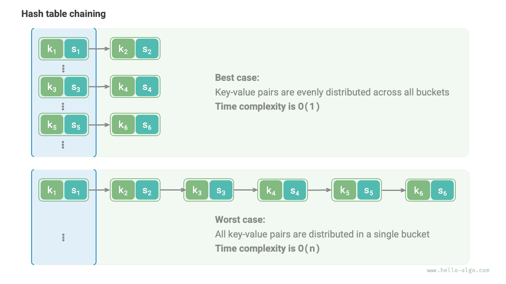

التجزئة
خوارزمية التجزئة
قدّم القسمان السابقان مبدأ عمل جداول التجزئة وطرق التعامل مع تصادمات التجزئة. غير أن العنونة المفتوحة والسلسلة المنفصلة كلتيهما لا تضمنان إلا أن يعمل جدول التجزئة بشكل طبيعي عند حدوث تصادمات التجزئة، ولا يمكنهما تقليل تكرار هذه التصادمات.
إذا تكررت تصادمات التجزئة بإفراط، تدهور أداء جدول التجزئة تدهوراً حاداً. وكما يوضح الشكل أدناه، في جدول تجزئة بالسلسلة المنفصلة، تُوزَّع أزواج المفتاح-القيمة في الحالة المثالية بالتساوي على الدلاء، محققةً كفاءة استعلام مثلى؛ أما في أسوأ حالة، فتُخزَّن جميع أزواج المفتاح-القيمة في الدلو نفسه، ويتدهور التعقيد الزمني إلى $O(n)$.

توزيع أزواج المفتاح-القيمة تحدده دالة التجزئة. استذكر خطوات دالة التجزئة: تُحسب أولاً قيمة التجزئة، ثم يُؤخذ باقي قسمتها على طول المصفوفة:
index = hash(key) % capacity
وبمراقبة الصيغة أعلاه، عندما تكون سعة جدول التجزئة capacity ثابتة، تحدد خوارزمية التجزئة hash() قيمة الخرج، وبالتالي تحدد توزيع أزواج المفتاح-القيمة في جدول التجزئة.
وهذا يعني أنه لتقليل احتمال تصادمات التجزئة، ينبغي أن نركّز على تصميم خوارزمية التجزئة hash().
أهداف خوارزميات التجزئة
لبناء جدول تجزئة سريع ومتين في آن واحد، ينبغي أن تتمتع خوارزمية التجزئة بالخصائص التالية:
- الحتمية: بالنسبة إلى المدخل نفسه، ينبغي أن تنتج خوارزمية التجزئة الخرج نفسه دائماً. وبهذا فقط يمكن أن يكون جدول التجزئة موثوقاً.
- الكفاءة العالية: ينبغي أن تكون عملية حساب قيمة التجزئة سريعة بما يكفي. وكلما قلّت التكلفة الحسابية، كان جدول التجزئة أكثر عملية.
- التوزيع المنتظم: ينبغي أن تضمن خوارزمية التجزئة توزيع أزواج المفتاح-القيمة بالتساوي في جدول التجزئة. وكلما كان التوزيع أكثر انتظاماً، قلّ احتمال تصادمات التجزئة.
وفي الواقع، لا تُستخدم خوارزميات التجزئة لتنفيذ جداول التجزئة فحسب، بل تُطبَّق أيضاً على نطاق واسع في مجالات أخرى.
- تخزين كلمات المرور: لحماية أمان كلمات مرور المستخدمين، لا تخزّن الأنظمة عادةً كلمات المرور بنصها الصريح، بل تخزّن قيم التجزئة لكلمات المرور. وعندما يُدخل المستخدم كلمة مرور، يحسب النظام قيمة تجزئة المدخل ويقارنها بقيمة التجزئة المخزنة. فإن تطابقتا، اعتُبرت كلمة المرور صحيحة.
- فحص سلامة البيانات: يمكن لمرسل البيانات حساب قيمة تجزئة البيانات وإرسالها معها؛ ويمكن للمستقبِل إعادة حساب قيمة تجزئة البيانات المستلمة ومقارنتها بقيمة التجزئة المرسلة. فإن تطابقتا، اعتُبرت البيانات سليمة.
وفي التطبيقات التشفيرية، تحتاج خوارزميات التجزئة إلى خصائص أمان أقوى لمنع الهندسة العكسية، مثل استنتاج كلمة المرور الأصلية من قيمة التجزئة.
- أحادية الاتجاه: ينبغي أن يستحيل استنتاج أي معلومات عن بيانات المدخل من قيمة التجزئة.
- مقاومة التصادم: ينبغي أن يكون من الصعب للغاية إيجاد مدخلين مختلفين ينتجان قيمة التجزئة نفسها.
- تأثير الانهيار الجليدي (avalanche effect): ينبغي أن تؤدي التغييرات الطفيفة في المدخل إلى تغييرات كبيرة وغير متوقعة في الخرج.
لاحظ أن "التوزيع المنتظم" و"مقاومة التصادم" مفهومان مستقلان. فتحقيق التوزيع المنتظم لا يعني بالضرورة مقاومة التصادم. على سبيل المثال، مع مدخل عشوائي key، يمكن لدالة التجزئة key % 100 أن تنتج خرجاً موزعاً بانتظام. غير أن خوارزمية التجزئة هذه بسيطة جداً، وجميع المفاتيح key ذات الرقمين الأخيرين المتماثلين سيكون لها الخرج نفسه، مما يسهّل استنتاج key صالح للاستخدام من قيمة التجزئة، وبالتالي كسر كلمة المرور.
تصميم خوارزميات التجزئة
تصميم خوارزميات التجزئة مسألة معقدة تستلزم مراعاة عوامل كثيرة. غير أنه في بعض السياقات الأقل تطلباً، يمكننا أيضاً تصميم بعض خوارزميات التجزئة البسيطة.
- التجزئة الجمعية: اجمع رموز ASCII لكل حرف في المدخل واستخدم المجموع الكلي كقيمة تجزئة.
- التجزئة الضربية: استفد من الارتباط المنخفض الذي يُدخله الضرب: اضرب في ثابت عند كل خطوة واجمع رموز ASCII للأحرف في قيمة التجزئة.
- تجزئة XOR: راكم قيمة التجزئة بعملية XOR على كل عنصر من عناصر بيانات المدخل.
- التجزئة الدوارة: راكم رمز ASCII لكل حرف في قيمة تجزئة، مع إجراء عملية دوران على قيمة التجزئة قبل كل تجميع.
Go
/* التجزئة الدوارة */
func rotHash(key string) int {
var hash int64
var modulus int64
modulus = 1000000007
for _, b := range []byte(key) {
hash = ((hash << 4) ^ (hash >> 28) ^ int64(b)) % modulus
}
return int(hash)
}
TypeScript
/* التجزئة الدوارة */
function rotHash(key: string): number {
let hash = 0;
const MODULUS = 1000000007;
for (const c of key) {
hash = ((hash << 4) ^ (hash >> 28) ^ c.charCodeAt(0)) % MODULUS;
}
return hash;
}
يمكننا ملاحظة أن الخطوة الأخيرة في كل خوارزمية تجزئة هي أخذ باقي قسمة النتيجة على العدد الأولي الكبير $1000000007$، بما يضمن بقاء قيمة التجزئة ضمن نطاق مناسب. وهذا يطرح سؤالاً طبيعياً: لِمَ التأكيد على استخدام مقياس أولي، وما عيوب استخدام مقياس مركب؟
باختصار: استخدام عدد أولي كبير كمقياس يساعد على تعظيم انتظام قيم التجزئة. ولأن العدد الأولي لا يشارك أعداداً أخرى في عوامل مشتركة، فإنه يقلل الأنماط الدورية التي تُدخلها عملية باقي القسمة، وبذلك يخفف تصادمات التجزئة.
على سبيل المثال، لنفترض أننا اخترنا العدد المركب $9$ كمقياس، وهو يقبل القسمة على $3$، فستُعيَّن جميع المفاتيح key القابلة للقسمة على $3$ إلى قيم التجزئة $0$ و$3$ و$6$.
$$ \begin{aligned} \text{modulus} & = 9 \newline \text{key} & = { 0, 3, 6, 9, 12, 15, 18, 21, 24, 27, 30, 33, \dots } \newline \text{hash} & = { 0, 3, 6, 0, 3, 6, 0, 3, 6, 0, 3, 6,\dots } \end{aligned} $$
إذا اتبعت قيم key المدخلة هذا النوع من المتتابعات الحسابية، فستتكتل قيم التجزئة، مما يزيد تصادمات التجزئة سوءاً. والآن لنفترض أننا استبدلنا modulus بالعدد الأولي $13$. ولأن key وmodulus لا يشاركان في عوامل مشتركة، تصبح قيم التجزئة الناتجة أكثر انتظاماً بكثير.
$$ \begin{aligned} \text{modulus} & = 13 \newline \text{key} & = { 0, 3, 6, 9, 12, 15, 18, 21, 24, 27, 30, 33, \dots } \newline \text{hash} & = { 0, 3, 6, 9, 12, 2, 5, 8, 11, 1, 4, 7, \dots } \end{aligned} $$
جدير بالذكر أنه إذا كان توزيع key عشوائياً ومنتظماً بشكل مضمون، فإن اختيار عدد أولي أو عدد مركب كمقياس يمكن أن ينتج قيم تجزئة موزعة بانتظام. غير أنه عندما يكون في توزيع key شيء من الدورية، فإن أخذ باقي القسمة على عدد مركب أكثر عرضة للتكتل.
وخلاصة القول، نختار عادةً عدداً أولياً كمقياس، وينبغي أن يكون هذا العدد الأولي كبيراً بما يكفي لإزالة الأنماط الدورية قدر الإمكان، بما يعزز متانة خوارزمية التجزئة.
خوارزميات التجزئة الشائعة
من السهل أن نرى أن خوارزميات التجزئة البسيطة المقدمة أعلاه "هشّة" إلى حد كبير، وتقصر كثيراً عن أهداف تصميم خوارزميات التجزئة. على سبيل المثال، ولأن الجمع وXOR عمليتان تبديليتان، لا تستطيع التجزئة الجمعية وتجزئة XOR التمييز بين سلاسل نصية تحتوي الأحرف نفسها بترتيب مختلف، مما قد يزيد تصادمات التجزئة سوءاً ويُدخل مخاطر أمنية.
في الممارسة العملية، نستخدم عادةً بعض خوارزميات التجزئة القياسية، مثل MD5 وSHA-1 وSHA-2 وSHA-3. وهي قادرة على تعيين بيانات مدخلة بأي طول إلى قيمة تجزئة ثابتة الطول.
وعلى مدى القرن الماضي، بقيت خوارزميات التجزئة في عملية مستمرة من الترقية والتحسين. ويسعى بعض الباحثين إلى تحسين أداء خوارزميات التجزئة، بينما يكرّس آخرون، بمن فيهم القراصنة، جهودهم لإيجاد مشكلات أمنية في خوارزميات التجزئة. ويعرض الجدول أدناه خوارزميات التجزئة الشائعة الاستخدام في التطبيقات العملية.
- تعرّضت MD5 وSHA-1 لهجمات ناجحة عدة مرات، ولذلك هُجرتا في تطبيقات الأمان المختلفة.
- سلسلة SHA-2، وخاصة SHA-256، من أكثر خوارزميات التجزئة أماناً حتى الآن، ولم يُبلَّغ عن هجمات ناجحة عليها، ولذلك تُستخدم على نطاق واسع في تطبيقات الأمان والبروتوكولات المختلفة.
- تتمتع SHA-3 بتكاليف تنفيذ أقل وكفاءة حسابية أعلى مقارنةً بـSHA-2، لكن نطاق استخدامها الحالي ليس واسعاً كسلسلة SHA-2.
الجدول
| MD5 | SHA-1 | SHA-2 | SHA-3 | |
|---|---|---|---|---|
| سنة الإصدار | 1992 | 1995 | 2002 | 2008 |
| طول الخرج | 128 bit | 160 bit | 256/512 bit | 224/256/384/512 bit |
| تصادمات التجزئة | متكررة | متكررة | نادرة | نادرة |
| مستوى الأمان | منخفض، وقد تعرّض لهجوم ناجح | منخفض، وقد تعرّض لهجوم ناجح | مرتفع | مرتفع |
| التطبيقات | مهجور، ولا يزال مستخدماً في فحوص سلامة البيانات | مهجور | التحقق من معاملات العملات المشفرة، والتوقيعات الرقمية، وغيرها | يمكن استخدامه بديلاً عن SHA-2 |
قيم التجزئة في بنى البيانات
نعلم أن مفاتيح جدول التجزئة يمكن أن تكون أعداداً صحيحة وأعداداً عائمة وسلاسل نصية وأنواع بيانات أخرى. وتوفّر لغات البرمجة عادةً خوارزميات تجزئة مدمجة لهذه الأنواع لحساب فهارس الدلاء في جدول التجزئة. وباتخاذ Python مثالاً، يمكننا استدعاء الدالة hash() لحساب قيم التجزئة لمختلف أنواع البيانات.
- قيم تجزئة الأعداد الصحيحة والقيم المنطقية هي قيمها نفسها.
- حساب قيم التجزئة للأعداد العائمة والسلاسل النصية أكثر تعقيداً، ونشجع القارئ المهتم على دراسته بنفسه.
- تُحصَّل قيمة تجزئة tuple بتجزئة كل عنصر من عناصره ودمج هذه النتائج في قيمة تجزئة واحدة.
- تُولَّد قيمة تجزئة الكائن عادةً من عنوانه في الذاكرة. وبتجاوز دالة التجزئة الخاصة بالكائن، يمكن توليدها من محتوى الكائن بدلاً من ذلك.
انتبه إلى أن تعريف دوال حساب قيمة التجزئة المدمجة وطرقها يختلف بين لغات البرمجة المختلفة.
Go
// لا توفّر Go دوال تجزئة مدمجة
TypeScript
// لا توفّر TypeScript دوال تجزئة مدمجة
في كثير من لغات البرمجة، لا يمكن إلا للكائنات غير القابلة للتغيير أن تكون key في جدول تجزئة. فإذا استخدمنا قائمة (مصفوفة ديناميكية) كـkey، فعند تغيّر محتوى القائمة تتغير قيمة تجزئتها أيضاً، ولن نستطيع بعد ذلك العثور على value الأصلي في جدول التجزئة.
وعلى الرغم من أن متغيّرات الأعضاء للكائن المخصص (مثل عقدة قائمة مترابطة) قابلة للتغيير، فإنها قابلة للتجزئة. وهذا لأن قيمة تجزئة الكائن تُولَّد عادةً استناداً إلى عنوانه في الذاكرة، وحتى إذا تغيّر محتوى الكائن، يبقى عنوان الذاكرة نفسه، فتبقى قيمة التجزئة دون تغيير.
ربما لاحظت أن قيم التجزئة المطبوعة في وحدات تحكم مختلفة تختلف. وهذا لأن مفسّر Python يضيف ملحاً عشوائياً إلى دالة تجزئة السلاسل النصية في كل مرة يبدأ فيها. وهذا الأسلوب يمنع هجمات HashDoS بفعالية ويعزز أمان خوارزمية التجزئة.